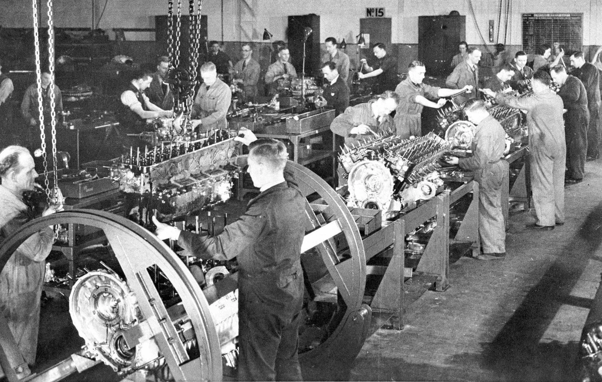

A Revolução Industrial, iniciada na Inglaterra em meados do século XVIII, representou a transição da produção artesanal para o sistema de fábricas mecanizadas movidas a vapor, transformando profundamente a economia e as estruturas sociais da humanidade.
A nova ordem social dividiu-se entre a burguesia industrial (donos dos meios de produção) e o proletariado (trabalhadores assalariados). Os operários enfrentavam jornadas de até 16 horas diárias em ambientes insalubres, com ampla exploração do trabalho infantil e feminino, além da alienação gerada pela divisão técnica e repetitiva do trabalho.
Questão 1
Sobre as transformações econômicas e sociais decorrentes da Revolução Industrial na Inglaterra, é correto afirmar que:
A) O trabalho assalariado garantiu aos camponeses ascensão social rápida.
B) A migração em massa da população do campo para as cidades (êxodo rural) foi impulsionada pelos cercamentos das terras, fornecendo a mão de obra necessária para as indústrias.
C) As corporações de ofício medievais assumiram o controle das novas fábricas.
D) O crescimento urbano ocorreu de forma planejada, com saneamento de alta qualidade.
Questão 2
A imposição do relógio e da máquina sobre o cotidiano do trabalhador nas fábricas gerou um fenômeno caracterizado por:
A) Maior liberdade criativa e artística no desenvolvimento de cada peça.
B) Valorização do saber tradicional do antigo artesão.
C) Alienação do operário, que se tornou um apêndice da máquina, perdendo o controle sobre o produto final do seu trabalho.
D) Redução drástica da jornada diária para preservar a saúde mental.